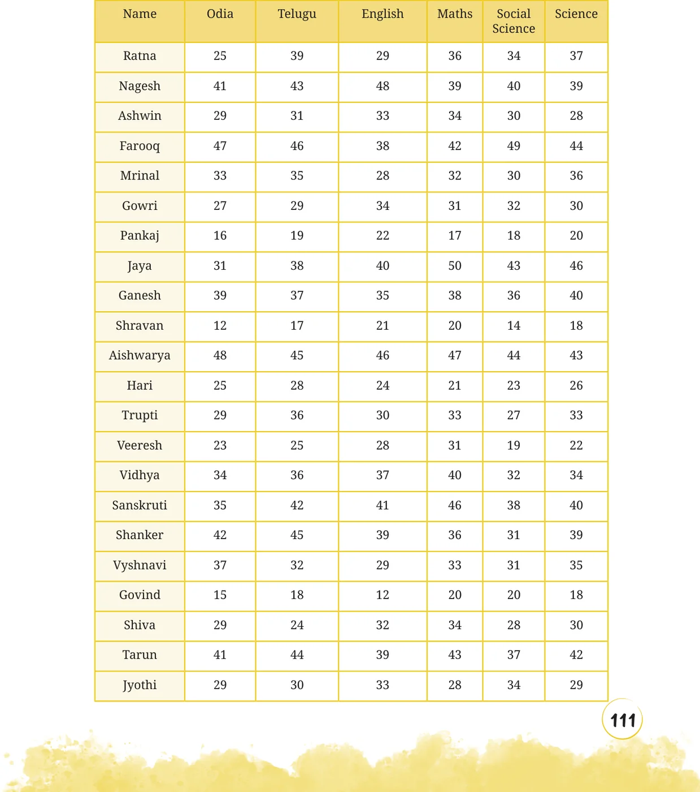
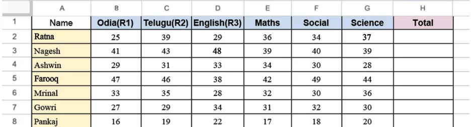
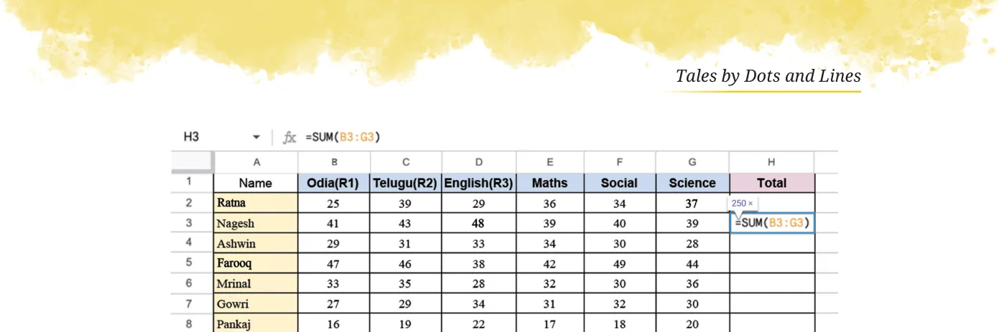

Sudhakar has collected the mid-term exam marks obtained by his Grade 8 students in the following table:


Sudhakar has to calculate the total marks scored by each student. He is also interested in knowing the average marks scored in each subject. But there are so many numbers! He will have to spend too much time and effort to complete this task. Of course, he can use a calculator to speed up the task. Is there any way to further quicken this process? One way is to use a computer. Computers have different applications/ tools that can be used to perform tasks. One such application is a spreadsheet - it is like a digital notebook with rows and columns of small boxes called cells. In each cell, we can type text or numbers. The picture below shows a snapshot of a spreadsheet where Sudhakar has entered the marks data of his class. Try to get access to a computer before proceeding.

Before learning how to calculate the average marks per subject and the total marks scored by each student, let us first understand the structure of spreadsheets and how to read them. Can you tell which cell has the marks obtained by Farooq in Mathematics? Cells are named and referred to using the column headers labelled A, B, C, … , and row headers labelled 1, 2, 3, … Farooq’s score in Mathematics is in cell E5. Can you tell what data is in column B7? In which subjects has Ashwin scored more than 30 marks? How can we use spreadsheets to quickly calculate totals and averages? In addition to text and numbers, we can also enter formulae in a cell. We can write a formula that computes the sum or average of a row, or column of cells. We can describe a row of cells by an expression of the form Start:End, indicating the first and last cell in the row. For instance, Nagesh’s marks are described by the expression B3:G3, while Gowri’s marks in Odiya, Telugu and English are described by the expression B7:D7. We can use similar expressions to describe columns. For instance, D2:D6 describes the marks in English for the first five students. We can then write a formula to compute the sum or the average of a row or column. For instance =SUM(B3:G3) calculates the total marks for Nagesh across all subjects, while =AVERAGE(B7:D7) calculates Gowri’s

What formula would you type to find out the class average marks in Science? Find out if the class average marks in Odia is greater than the class average marks in Telugu. Show the average marks in other subjects after the last row by typing the appropriate formulae. Try these out on a computer. You can download the tabular data from this QR code. Get the total scores of each student by typing the appropriate formulae.
Note to the Teacher: You can use any spreadsheet software application such as Microsoft Excel, Google Sheets, LibreOffice Calc, etc. If there are not sufficient computers for each student, students can share a computer in groups. If that’s not possible, the computer screen can be projected for the whole class if there is only one computer available.